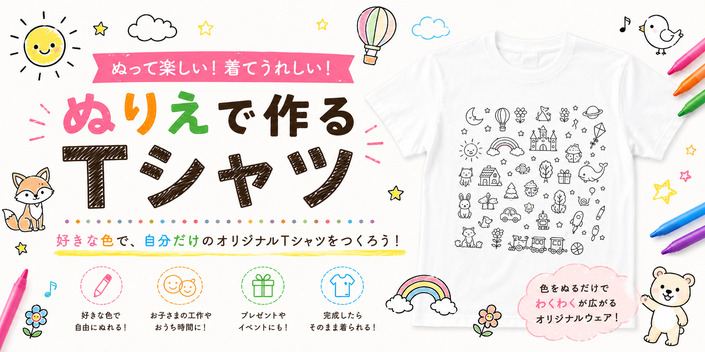
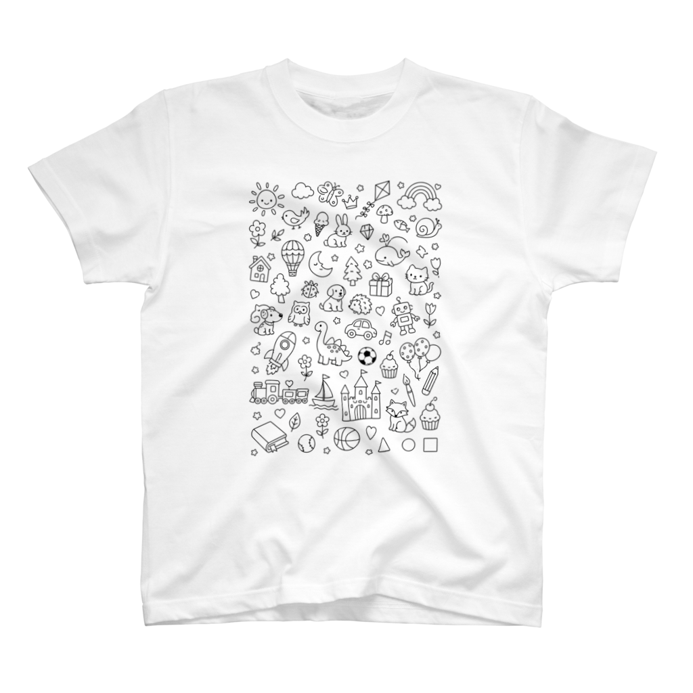
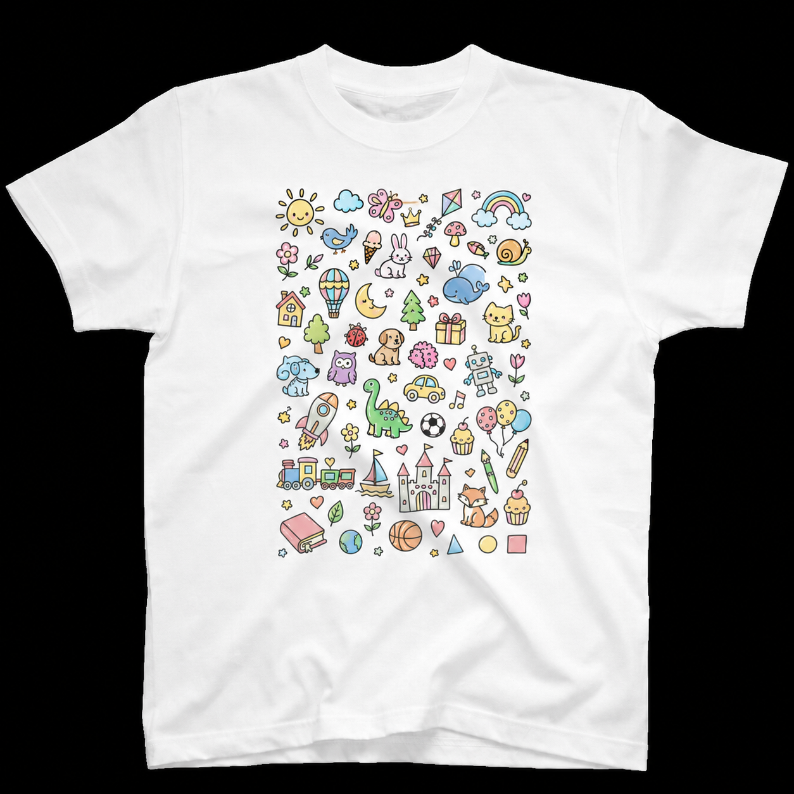
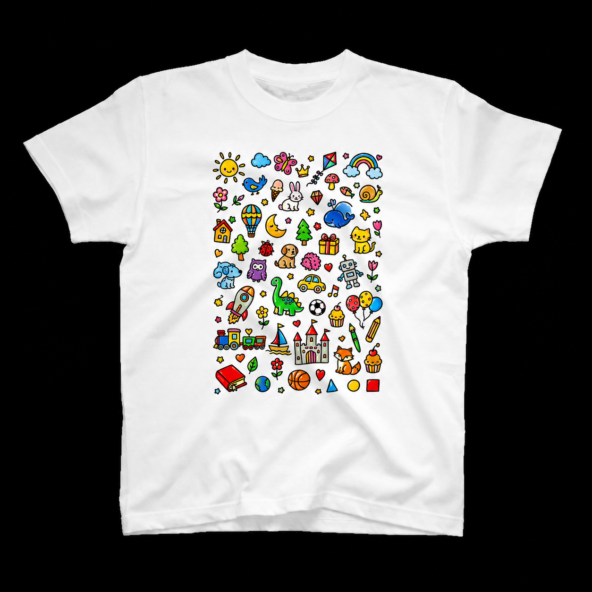

好きな色で自由にぬれる
線画の絵柄に色を足して、自分だけのデザインにできます。きれいにぬっても、思いきりカラフルにしても大丈夫です。

COLORING T-SHIRT
ありきたりではないプレゼントを探している方へ。好きな色で自由にぬって、完成したらそのまま着られるTシャツです。
GIFT IDEA
誕生日やちょっとしたお祝いに、毎回同じような物を選んでしまう。そんなときに、ぬりえTシャツは「渡して終わり」ではなく、ぬる時間まで楽しめるプレゼントになります。
FEATURES
子どもも大人も、色を選ぶところから楽しめるTシャツです。
線画の絵柄に色を足して、自分だけのデザインにできます。きれいにぬっても、思いきりカラフルにしても大丈夫です。
ぬって楽しんだあと、Tシャツとして使えるのがうれしいポイント。遊んだ時間ごと、思い出に残せます。
親子時間のきっかけにも、孫からじいじ・ばあばへの手作り感のある贈り物にも向いています。
HOW TO ENJOY
動物、恐竜、乗り物、花や自然など、気分に合うデザインを選びます。
お手持ちの布用ペンなどを使って、自由に色を足していきます。
できあがったTシャツは、世界にひとつだけのウェアとして楽しめます。
PATTERNS
いまある絵柄だけで終わりではありません。動物、恐竜、乗り物、花や自然など、選ぶ楽しさが広がるように少しずつ増やしていきます。
最新の商品をSUZURIで見るSAMPLE 006
どうぶつ、恐竜、乗り物、お城、虹、星などをぎゅっと詰め込んだ、ぬる場所がたくさんある縦長デザインです。線画のままでも、好きな色でぬった完成イメージでも楽しさが伝わります。
SUZURIで商品を見る


GIFT SCENE
一緒に色を選んだり、完成を見せ合ったり。Tシャツ作りそのものが楽しい時間になります。
ぬったTシャツは、気持ちが伝わる手作り感のある贈り物に。写真に残しても楽しいギフトです。
ただ買って渡すだけではなく、相手のわくわくまで届けたいときにぴったりです。
FAQ
Tシャツのみの商品です。ぬるときは、お手持ちの布用ペンなどをご用意ください。
SUZURIの商品ページから購入できます。価格、サイズ、納期などの最新情報はSUZURI側でご確認ください。
はい。動物、恐竜、乗り物、花や自然など、プレゼントとして選びやすい絵柄を少しずつ増やしていく予定です。